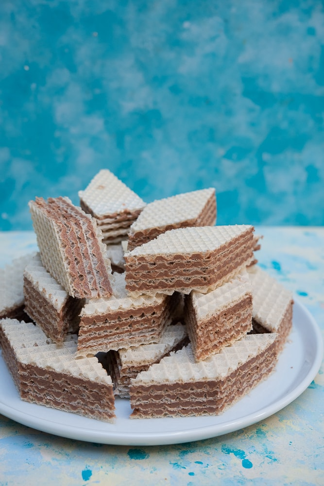

Wafelki z
mlekiem
w proszku

Czas przygotowania: 135 min
Typ diety: dowolna
Typ posiłku: deser
Wafelki z
mlekiem
w proszku
Czas przygotowania: 135 min
Typ diety: dowolna
Typ posiłku: deser
Masło kroimy w mniejszą kostkę.Wlewamy do rondelka mleko i dodajemy cukier oraz masło, mieszamy. Całość podgrzewamy na małym ogniu, cały czas mieszając, aż do rozpuszczenia się masła i cukru. Nie doprowadzamy do wrzenia.Do wciąż płynnej, ale chłodnej masy dodajemy partiami mleko w proszku i bardzo dokładnie mieszamy trzepaczką. Gdy masa zgęstnieje i poczujemy, że zaczyna stawiać coraz większy opór, mieszamy bardziej energicznie. Mieszamy do momentu, w którym mleko całkowicie połączy się z kakaową masą, a całość będzie aksamitna i gęsta.
Na każdego posmarowanego wafla układamy kolejnego (masą do góry), a suchym waflem przykrywamy całość.Wafle owijamy folią spożywczą i na ich wierzch kładziemy coś ciężkiego (np. grubą książkę). Odstawiamy do lodówki na co najmniej 2 godziny, aby się ze sobą skleiły.Wafle kroimy w kwadraty, a następnie każdy kwadrat kroimy na pół, by powstały trójkąty. Tak przygotowane wafle są gotowe do jedzenia.